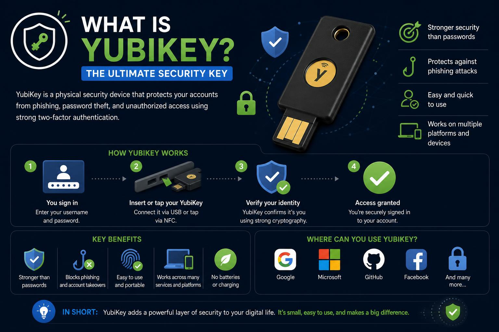

프로톤 월렛이 로그인할 때 유비키를 요구하는 걸 보고, 문득 이런 생각이 들었다. "아이폰 웹앱으로 돌아가면서, 유비키 없이는 애초에 열리지도 않는 핫월렛을 만들 수 있지 않을까?"

1. 기술적으로는 진짜 되긴 하더라
WebAuthn PRF 확장(FIDO2 hmac-secret)을 쓰면, 정말로 "유비키 없이는 복호화 자체가 불가능한" 구조를 웹앱으로 만들 수 있었다. iOS/Safari 18 이상, 유비키 5 시리즈(펌웨어 5.2.4 이상)에서 지원된다.
여기엔 두 갈래가 있다. 그냥 "로그인 게이트"만 걸어두는 약한 버전과, 시드 자체를 유비키에서 유도한 키로 암호화해버리는 진짜 바인딩. 당연히 후자로 방향을 잡았다. 비트코인 전용, 실제 자금이 들어갈 실사용 지갑, 백업은 종이 대신 예비 유비키 2개를 독립적으로 등록하는 방식으로.
프로젝트 폴더 만들고 필요한 npm 패키지들(bitcoinjs-lib, bip39, bip32 등)까지 설치했다. 근데 정작 지갑 로직 코드를 짜기 직전에, 스스로 멈췄다. 뭔가 더 짚어봐야 할 것 같아서.
2. 위협모델을 다시 짜보니
핵심은 이거다. 웹으로 서빙되는 코드는 "접속하는 그 순간 배포되어 있는 JS"를 그대로 신뢰하는 구조다. 한번 감사받으면 펌웨어가 바뀌지 않는 하드웨어 지갑이랑은 신뢰 모델 자체가 다르다.
실제로 자금이 털릴 수 있는 경로를 위험도 순으로 다시 짜봤다.
- GitHub 배포 계정/세션 탈취 → 악성 코드로 바꿔치기 (가장 위험)
- npm 의존성 혹은 CI 파이프라인 공급망 공격
- 기기(아이폰) 자체의 악성코드 감염 → 복호화되는 순간을 그대로 탈취
- 클립보드/주소 스와핑 악성코드 (송금할 때)
- XSS
- 니모닉 화면 노출 → 스크린샷이나 클라우드 동기화로 유출
반대로 유비키 자체를 원격으로 뚫거나, 피싱 사이트로 복제하는 건 우선순위가 낮았다. WebAuthn이 origin(도메인)을 자체적으로 바인딩해두기 때문에 이미 대부분 막혀 있었다.
3. 그럼 에어갭으로 서명하면 되지 않나
코디네이터 앱이 주문서(PSBT)를 만들면, 핫월렛은 와이파이·블루투스를 끈 오프라인 상태에서 age-plugin-yubikey로 암호화된 파일을 복호화해 서명하고, 다시 온라인으로 돌아와 브로드캐스트하는 방식을 생각해봤다. 방향 자체는 콜드카드나 SeedSigner류가 쓰는 정석적인 에어갭 서명 패턴이 맞았다. 근데 함정이 두 개 있었다.
하나, age-plugin-yubikey는 iOS 사파리(웹앱)에서 애초에 실행이 안 된다. PIV/스마트카드 통신 API 자체가 브라우저에 없다. 네이티브 앱으로 가거나, 웹앱을 유지하려면 결국 WebAuthn PRF로 다시 돌아가야 한다.
같은 폰에서 와이파이·블루투스를 껐다 켜는 건 진짜 에어갭이 아니다. 기기가 이미 감염돼 있다면, 무선을 끈 순간 캐시해뒀다가 다시 켜는 순간 그대로 새어나갈 수 있다.
둘, 이거다. 진짜 에어갭을 원하면 QR코드로 PSBT를 주고받는 방식(스패로우·넌척 방식)에, 가능하면 물리적으로 아예 분리된 서명 전용 기기가 필요하다.
4. 그럼 개인 서버에서 개인키를 가져오면?
랩탑에 개인 서버를 하나 두고, age-plugin-yubikey로 암호화한 파일을 보관해두고, 필요할 때 서버가 복호화한 뒤 폰이 그 개인키를 네트워크로 가져와서 서명하면 어떨까 생각해봤다.
결론부터 말하면 이건 개선이 아니라 후퇴다. 지금까지 지켰던 대원칙은 "복호화된 개인키는 절대 네트워크를 넘지 않는다, 넘어도 되는 건 서명 안 된/된 PSBT뿐이다"였는데, 이 방식은 개인키 자체가 랩탑에서 폰으로 네트워크를 탄다.
서버가 "요청하면 키를 복호화해서 내주는" 순간, 그 서버는 원격 키 추출 오라클이 된다. 취약점 하나, 설정 실수 하나로 전액이 날아가는 단일 실패점이 생기는 거다.
대안은 랩탑을 서버가 아니라 오프라인 서명기로 쓰는 거다. 폰(와치온리 코디네이터)이 PSBT만 QR로 랩탑에 넘기고, 랩탑은 그 순간 오프라인으로 전환한다. age-plugin-yubikey는 랩탑 네이티브 환경에서는 멀쩡히 돌아가니(iOS 제약이 아예 사라진다), 서명된 PSBT만 다시 QR로 돌려주면 된다. 개인키는 랩탑 밖으로 단 1바이트도 안 나간다. "개인 서버"는 이미 안전한 상태인 암호문을 백업·동기화하는 용도로만 쓰는 게 맞다.
5. NFC USB에 개인키를 담아두면?
탭사이너처럼, NFC 되는 USB 메모리에 개인키를 담아두고 필요할 때 태그해서 불러오는 건 어떨까도 생각해봤다. 근데 여기엔 근본적인 문제가 두 개 있었다.
하나, 시중의 일반 NFC-USB 메모리는 보안요소(Secure Element)가 없는 그냥 수동형 태그다. 탭사이너나 유비키가 안전한 이유는 개인키가 칩 안에서 만들어지고 절대 밖으로 안 나오고, 서명도 칩 내부에서 일어나기 때문이다. 반면 일반 NFC-USB 스틱은 인증이나 PIN 게이트가 없어서, 근처에 아무 NFC 리더나 갖다 대면 그대로 읽힌다(NFC 스키밍). 암호화해서 넣어둔다 해도, 그냥 "USB에 암호화 파일 하나 넣어둔 것"과 보안적으로 다를 게 없다. NFC라는 전송 방식 자체가 보안을 더해주는 게 아니었다.
둘, 유비키는 비트코인이 쓰는 secp256k1 곡선을 칩 안에서 서명하는 기능이 없다. PIV/FIDO2는 P-256, Ed25519, RSA만 지원한다. 그래서 유비키는 항상 "금고 문을 여는 열쇠" 역할까지만 할 수 있고, 실제 서명 연산은 결국 폰이나 랩탑의 소프트웨어에서 일어난다. 탭사이너처럼 "개인키가 칩 밖으로 단 한 순간도 안 나간다"는 보장은, 유비키 기반으로는 원천적으로 재현이 안 되는 거였다.
결론
정리하면 선택지는 두 개다. 탭사이너급 진짜 하드웨어 보장을 원한다면, 소프트웨어로 흉내 내지 말고 탭사이너·SatoChip·Jade 같은 secp256k1 보안요소 기기를 그냥 사는 게 정답이다. 그래도 유비키로 직접 만들고 싶다면, 지금까지 짜본 PRF + 에어갭 방식이 현실적인 상한선이고, 서명하는 그 짧은 순간의 노출은 구조적으로 감수해야 한다.
편의성(휴대성, 웹앱 하나로 완결)과 진짜 하드웨어급 보안(개인키가 물리적으로 단 한 번도 노출된 적 없음), 이 둘은 이번 설계로는 동시에 완전히 잡을 수 없다는 결론에 도달했다. 그래서 제작은 보류하기로 했다.
만들었던 프로젝트 폴더와 npm 패키지들은 전부 지웠다. 실제 지갑 로직이나 키 관련 코드는 애초에 한 줄도 작성하지 않았다.
나중에 다시 볼 때를 위한 핵심 원칙만 남겨둔다.
· 개인키(또는 그 평문)는 절대 네트워크를 건너면 안 된다 — 건너도 되는 건 서명 안 된/된 PSBT뿐.
· 웹앱은 "배포 계정 보안"이 곧 지갑 보안의 최전선이다 — 코드가 바뀌면 암호화 설계는 전부 무의미해진다.
· 유비키는 secp256k1을 칩 안에서 서명 못 한다 — "열쇠"는 될 수 있어도 "탭사이너"는 될 수 없다.
· 진짜 에어갭은 QR코드나 물리적으로 분리된 기기로만 성립한다 — 같은 기기의 무선 on/off로는 안 된다.